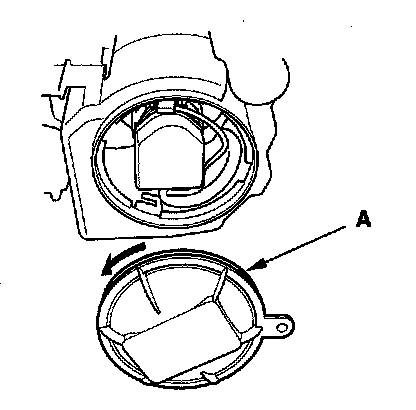
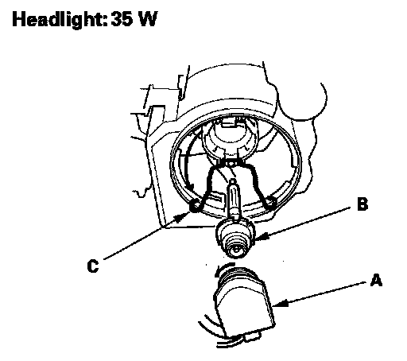

HID Bulb Replacement
HID Bulb ReplacementWARNING: A transient high tension (25,000 V) occurs at the bulb sockets of the high intensity discharge (HID) lamps when the combination light switch is turned ON, it may cause serious electrical shock or electrocution if you do not observe the cautions below.
CAUTION:
- Never turn on the combination light switch before fitting the HID bulbs to their bulb sockets and completing the reassembly of the headlight assembly.
- Do not service the headlights assembly in wet conditions, such as rain or snow, near a sprinkler system, or when your hands are wet to prevent electrocution.
- Do not touch the surface of the HID bulbs with your bare hands and do not stain it with any oils and fats.
- Do not disassemble the inverter unit and the igniter unit.
- Do not turn on the HID bulb by using a power source other than the battery mounted on your vehicle.
1. Make sure you have the anti-theft codes for the radio and the navigation system (if equipped). Make sure the ignition switch is OFF.
2. Turn the combination light switch OFF.
3. Disconnect the negative battery cable, then disconnect the positive cable.
4. Remove the headlight assembly.

5. Turn the cover (A) 45° counterclockwise to remove it from the headlight assembly.

6. Turn the socket (A) 45° counterclockwise to remove it from the bulb (B).
7. Pull the retaining spring (C) away from the bulb then remove the bulb.
8. Install the new bulb in the reverse order of removal. Make sure the notches in the bulb align with the tabs in the headlight.
9. After reconnecting the battery, enter the anti-theft codes for the radio and the navigation system, then set the clock.